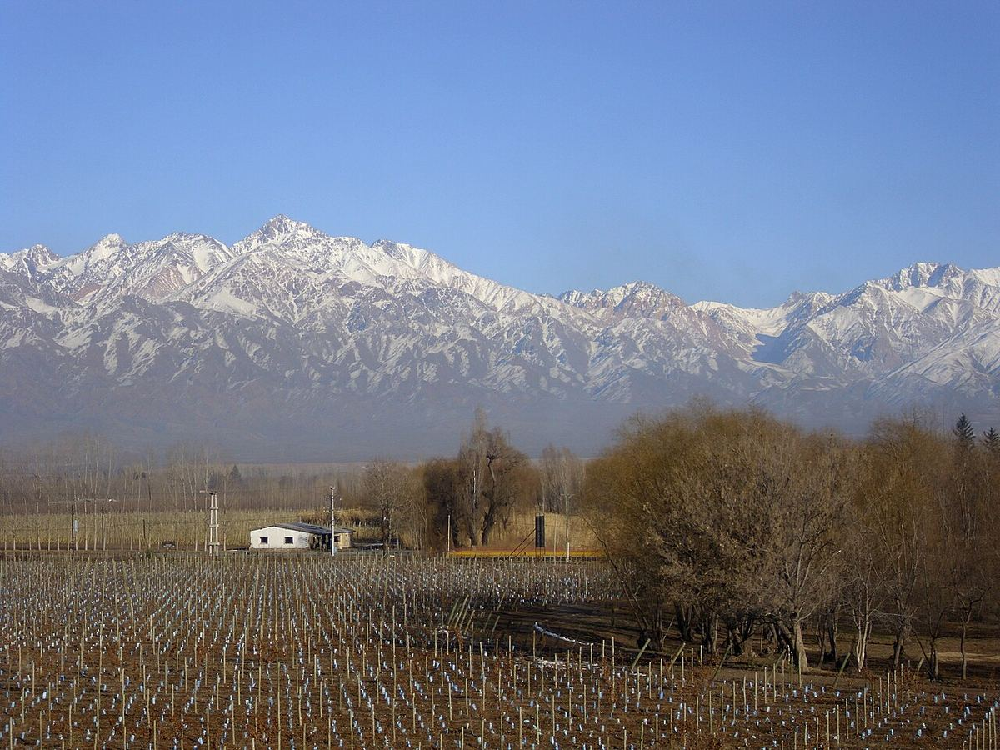

ROUGE
La vallée de Uco, dans le centre-ouest de Mendoza, réunit certains des vignobles les plus hauts et les plus frais de la province. Depuis les années 1990, elle est devenue la zone de référence pour le malbec d’altitude.

La vallée de Uco possède une longue tradition agricole, avec des vergers et quelques vieilles vignes, notamment autour de La Consulta, à San Carlos. Sa grande transformation viticole a toutefois commencé dans les années 1990, lorsque des producteurs argentins et étrangers ont cherché des zones plus fraîches que les secteurs traditionnels de Luján de Cuyo et de Maipú. Des plantations pionnières à haute altitude, comme celles de la famille Catena à Gualtallary, ont révélé le potentiel de la zone, et en quelques décennies la vallée s’est couverte de domaines et de caves, certaines d’une architecture très remarquable.
La vallée s’étend au sud de la ville de Mendoza, le long du río Tunuyán et de nombreux torrents descendant de la cordillère, et couvre trois départements : Tupungato, Tunuyán et San Carlos. Les vignes se situent environ entre 900 et plus de 1 600 mètres d’altitude, au pied du cordón del Plata et du volcan Tupungato. Le climat est plus frais que dans le reste de Mendoza, avec des nuits froides, de grands écarts thermiques et un rayonnement solaire intense. Les gelées de printemps et la grêle sont des risques importants, et de nombreux domaines utilisent des filets antigrêle.
Les sols sont alluviaux et très hétérogènes : sables et limons dans certains secteurs, et ailleurs d’abondants galets et graviers, parfois recouverts de carbonate de calcium. Cette diversité, visible même au sein d’un seul domaine, a favorisé l’élaboration de vins parcellaires.
Plusieurs indications géographiques ont été reconnues dans la vallée, parmi lesquelles Gualtallary à Tupungato, Los Chacayes et San Pablo à Tunuyán, et Paraje Altamira, La Consulta et Pampa El Cepillo à San Carlos. Chacune a ses propres caractéristiques d’altitude, d’exposition et de sol : Gualtallary est connue pour ses sols calcaires et ses vins tendus, Paraje Altamira pour ses galets.
Le malbec est le cépage principal et donne ici des vins à la couleur profonde mais à l’acidité marquée, aux notes florales et aux tanins fermes et fins. Le cabernet franc, le pinot noir, le chardonnay et le sauvignon blanc y réussissent aussi, profitant du climat frais. De nombreux producteurs recourent aux fermentations en béton, aux foudres et à un usage plus modéré de la barrique neuve pour préserver l’expression du lieu.
De plus en plus d’étiquettes indiquent le nom de l’IG ou du lieu-dit d’origine, une pratique qui reflète l’intérêt croissant pour l’expression des différences entre les secteurs de la vallée.